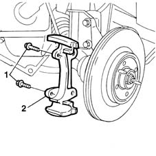
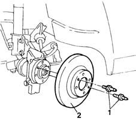

3310A52 front brake discs - r+r with brake calipers removed
- Path
- Procedures > 33 BRAKING SYSTEM > 3310 DISC BRAKES > 3310A FRONT DISC BRAKES > 3310A52 front brake discs - r+r with brake calipers removed
- Kind
- repair procedure (removal / refitting; the operation number is the code)
- Applies to
- all engines; all production periods
- Interactive page
- https://sloeber94.github.io/elrnDB-fMltpl/en/#/2891575
Applies to: all engines; all production periods
 Removing
Removing
 Refitting
Refitting1. Undo the fixing bolts (1a) and remove the front brake caliper bracket (1b).

Applies to: all engines; all production periods
1. Undo the two fixing pins.
2. Remove the front brake discs.

Applies to: all engines; all production periods
Refitting
RemovingPosition the brake discs and tighten the fixing pins to torque.
 | Fastening | Component | Ø | Value (daNm) |
|---|---|---|---|---|
- | Pin | FRONT BRAKE DISC. | M8 | 1.2 |
Fit the brake caliper bracket on the disc and tighten the two fixing bolts to torque.
| Fastening | Component | Ø | Value (daNm) |
|---|---|---|---|---|
- | Bolt | FRONT BRAKE CALIPER BRACKET | M12 | 10.5 |